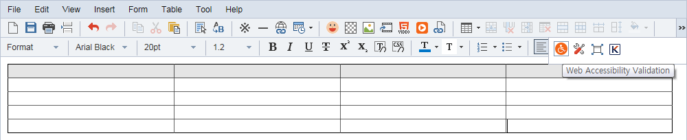
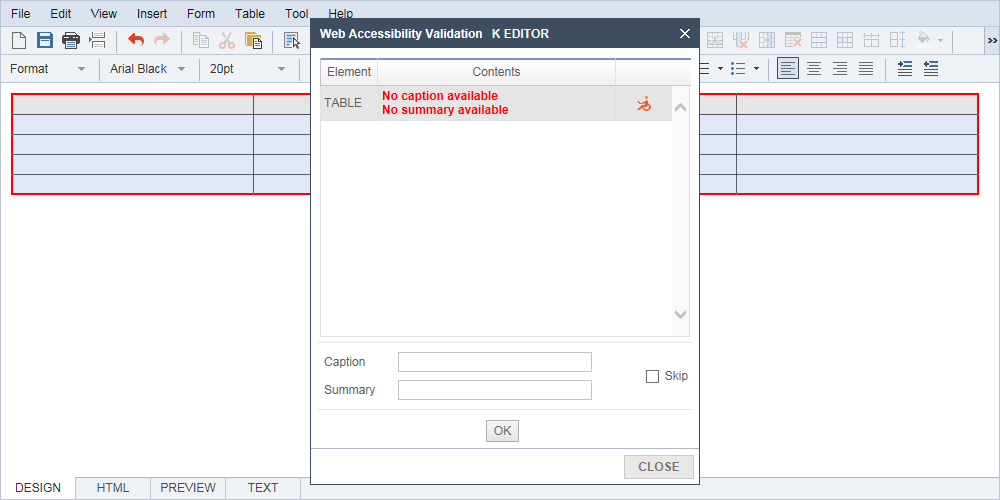
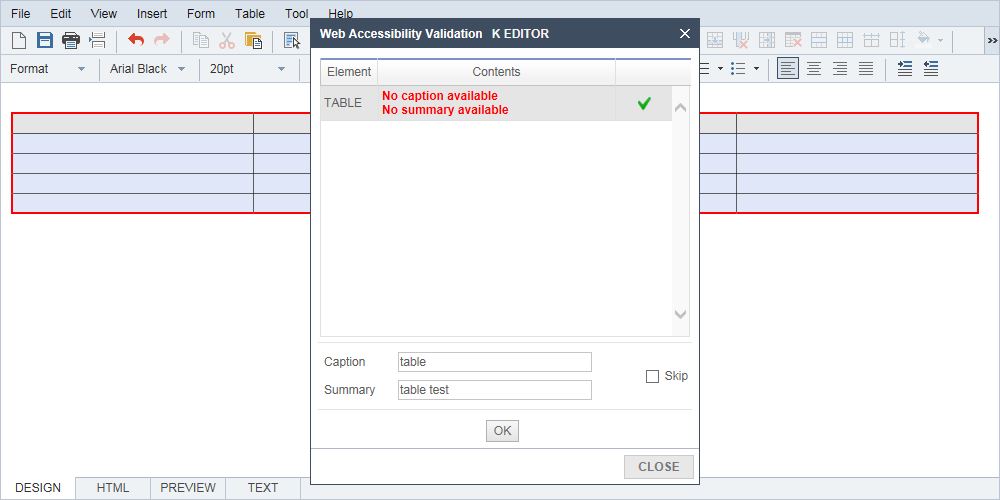
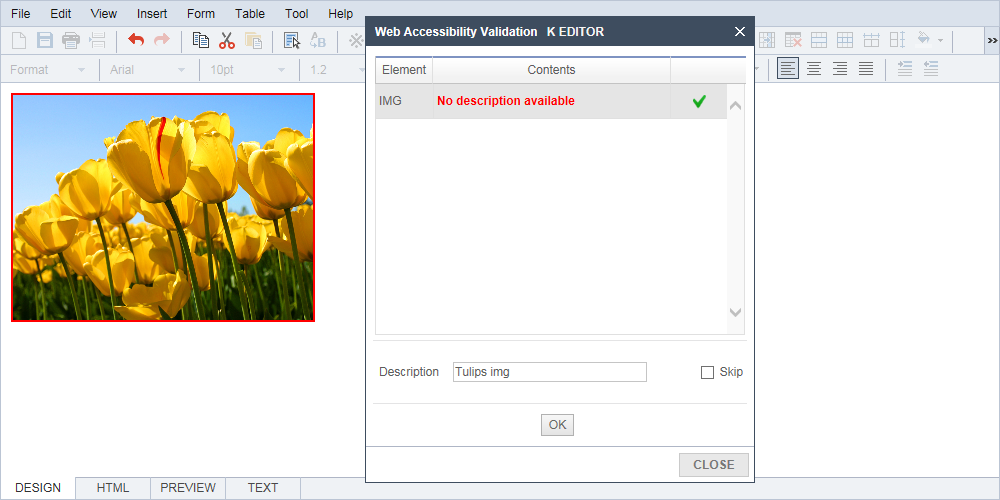
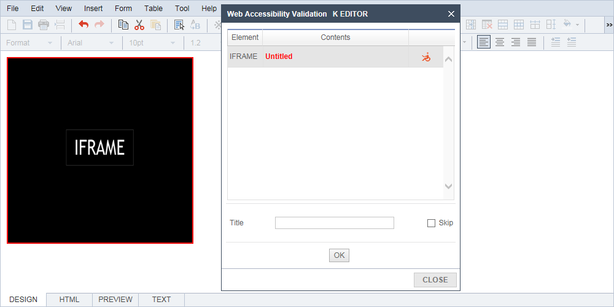
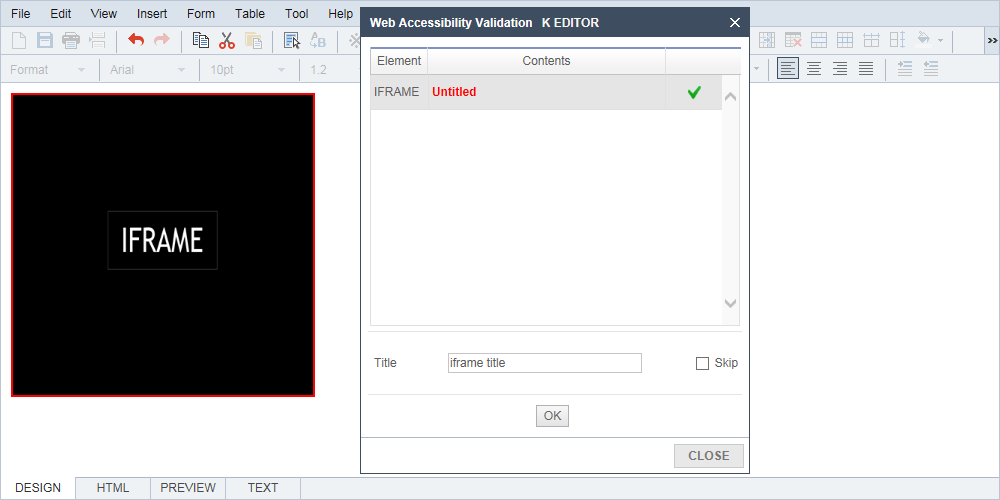
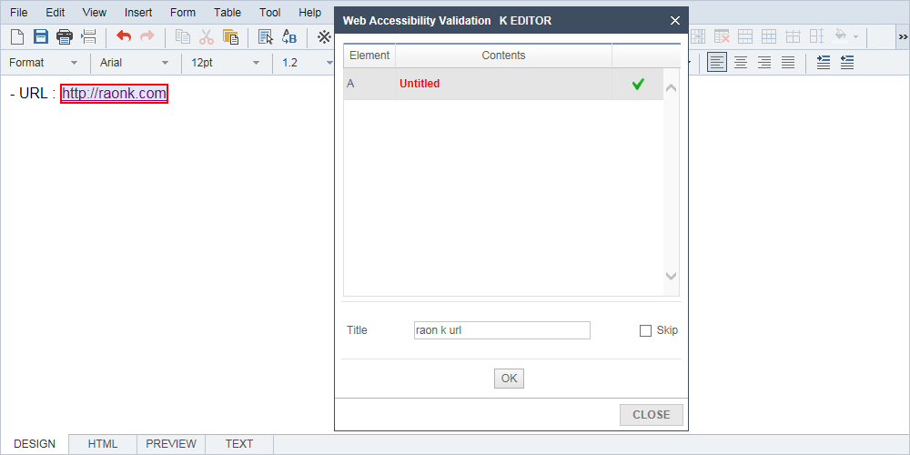
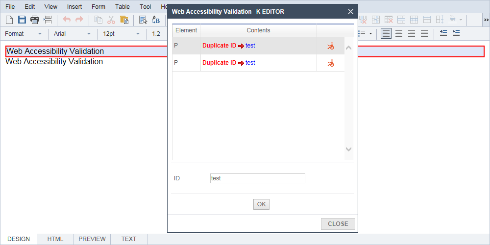
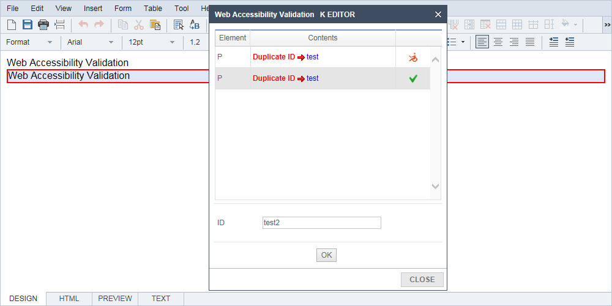
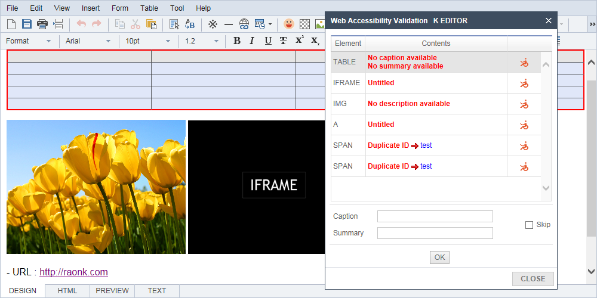

Verification is to identify any of that web accessibility.
For example, table caption of the items, summary items, Alt of image item, Item Title of the Iframe,
A link title entry and ID for redundancy check items.
1. Table Tag
The table tag will examine the violations of the caption and summary.


01after Table inserted the web, click to Check availability icon.
02If table title and description is missing, it is shown on Web Accessibility violation list.

03Click OK after you enter the title and description in the table and Web accessibility is reasonable if a check mark appears.
2. Image Tags
Image tag should check whether there is a violation of the value of Alt.
01After you insert the image, click the Web Accessibility verified icon.
02If the description of the image is missing, it appears to web accessibility violation list.

03Enter a description of the image, and then click OK. If you comply with Web accessibility, check mark appears.
3. Iframe tags
Iframe tag to check whether or not the violation of the title value.

01Click the access validation icon from the web after inserting the Iframe.
02If Iframe title is missing, it found in Web accessibility violation list.

03Enter the title of Iframe, and then click OK. Check mark appears when you comply with Web accessibility.
4. A Tag
A tag to verify whether or not the violation of the title value.
01After you insert a link, click on the icon of Web accessibility verification.
02If the link title is missing, it shown in the web accessibility violation list.

03Enter the link title, and then click OK. Check mark appears when you comply with Web accessibility.
5. Duplicate ID check
verify whether the violation that has been used to duplicate the values of the ID.

01Enter the item you want to duplicate an ID check. Web Accessibility Validation and click the icon.
02If the ID is duplicated, it found in Web accessibility violation list.

03Change the value of the ID, and then click OK. Check mark appears when you comply with Web accessibility.
6. Skip Setting
Make a check of the non-input from the Web accessibility verification violation item.
The corresponding tag is not verified as Violation item.
